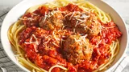

Spaghetti and Meatballs
Home

Spaghetti with Meatballs and a bolognese sauce
Steps
- Gather all ingredients.
- In a large bowl, combine ground beef, bread crumbs, parsley, Parmesan, 1/4 teaspoon black pepper, garlic powder and beaten egg. Mix well and form into 12 balls. Store, covered, in refrigerator until needed.
- In a large saucepan over medium heat, saute onion and garlic in olive oil until onion is translucent.
- Stir in tomatoes, salt, sugar and bay leaf. Cover, reduce heat to low, and simmer 90 minutes.
- Stir in tomato paste, basil, 1/2 teaspoon pepper and meatballs and simmer 30 minutes more.
- Serve hot and enjoy!